Учимся пользоваться Гугл Диском на разных устройствах
Гугл диск — облачное хранилище данных от компании Google. Оно позволяет не только сохранять файлы в облаке, но и изменять их со смартфона или планшета. Сервис удобен из-за простой регистрации, легкой настройки, быстроты использования, большого объема «Дискового» пространства. Существенный плюс программы – наличие приложения для мобильных устройств.
Вы узнаете какие есть особенности использования Google диска, а также как начать пользоваться Google диск, какие возможности он предоставляет и сколько места доступно для хранения. Мы никогда не потеряем важные документы, если храним файлы в облаке. Инструкция по установке и настройке Google диск поможет вам узнать преимущества и отличительные черты утилиты Гугл Драйв.
Создаем аккаунт в Google
Чтобы работать с «Диском», вам потребуется «Гугловский» аккаунт. Если вы его уже имеете, этот шаг можно пропустить. В этом шаге мы рассмотрим возможности Гугл диска и вход в него.
Действие 1. Открываем сайт Google (google.ru или google.com.ua). Ищем кнопку «Войти». Сейчас нам входить некуда, поскольку аккаунта нет, но Google предложит его завести.
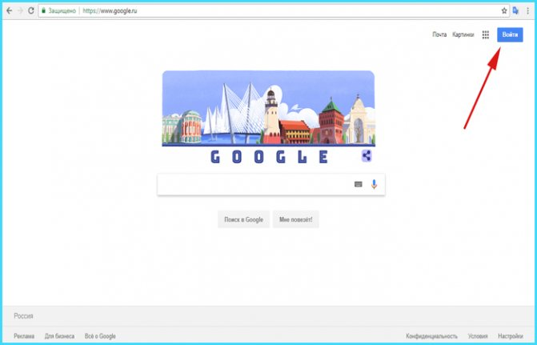Действие 2. Откроется страница с регистрацией. Нам необходимо заполнить поля:
- имя;
- фамилия;
- имя пользователя. Так в дальнейшем будет называться наш почтовый ящик;
- пароль. Придумать код, состоящий из английских символов: букв, цифр и, желательно, знаков препинания (например, #, $, %, *);
- подтвердить пароль.
Когда все формы заполнены, кликаем по «Далее»:
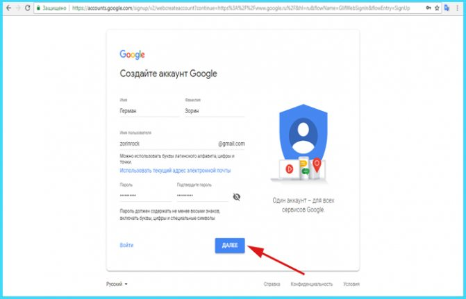Действие 3. Завершаем регистрацию. Нам нужно подтвердить личность, привязав номер телефона в созданному аккаунту.
Примечание! Желательно пользоваться схемой 1 аккаунт = 1 номер телефона. В ином случае, при необходимости восстановления пароля можно запутаться.
По желанию вводим резервный адрес почтового ящика (позволяет мощнее защитить аккаунт), заполняем дату рождения, выбираем пол и жмем «Далее».
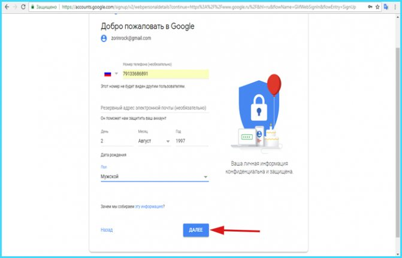Вводим резервный адрес почтового ящика, заполняем дату рождения, выбираем пол и жмем «Далее».
Действие 4. Подтверждаем телефон. Для этого кликаем по «Отправить». На указанный при регистрации номер придет SMS с кодом. Вводим его в поле.
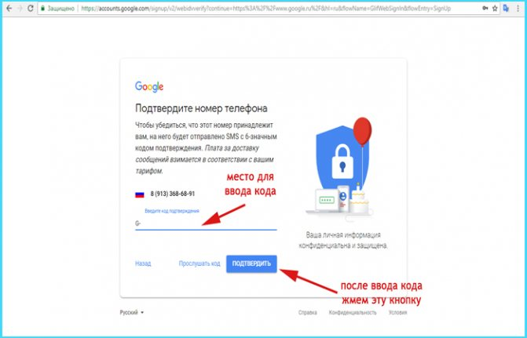Подтверждаем телефонный номер телефона и нажимаем «Подтвердить».
Действие 5. Подтверждаем правила использования сервиса. Прокручиваем колесико вниз, пока не появится кнопка «Принимаю». Кликаем по ней.
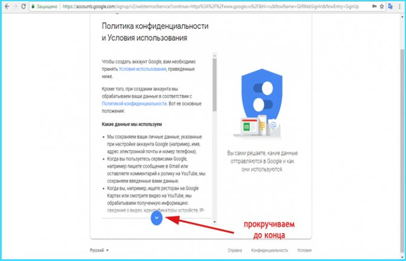Подтверждаем правила использования сервиса.
Действие 6. Аккаунт создан. Нас автоматически переместит на домашнюю страницу Google. Сверху можете увидеть первую букву своего имени, которое указали при регистрации. Это значит, вы вошли в аккаунт и можете начать работать с Google диск. Регистрация завершена.
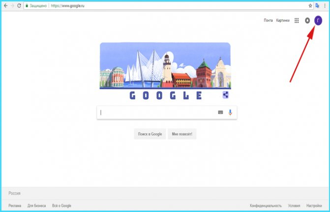Аккаунт создан.
Использование хранилища офлайн
В сервисе предоставляется возможным сохранять всю информацию на компьютере для последующей работы без подключения к интернету. Для этого необходимо в Настройках поставить галочку напротив Офлайн-доступа. Учитывайте появившуюся возможность доступа к вашим файлам всех, кто пользуется данным устройством.
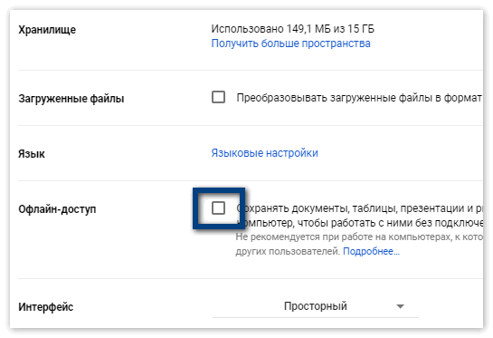Приложение автоматически устанавливается на системный disk C, что не очень удобно для многих пользователей. При необходимости изменить расположение программы, измените настройки в Параметрах синхронизации, выбрав нужный путь (любое место, кроме системного) к папке.
Входим в Google диск
После успешной регистрации остается вопрос: как войти в Google диск? Если у вас создан аккаунт Гугл, и вы пропустили предыдущий шаг, не беспокойтесь – последующие действия для всех пользователей одинаковы.
Действие 1. Заходим на страницу Google (google.ru или google.com.ua).
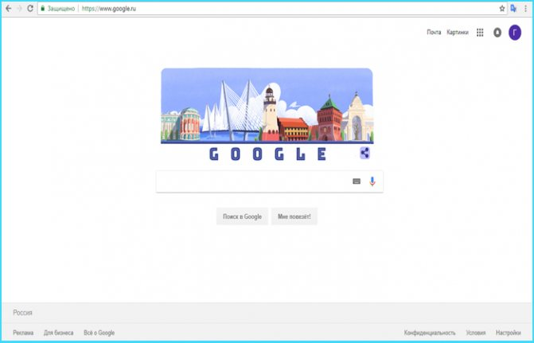Заходим на страницу Google.
Действие 2. В углу видим значок из девяти маленьких квадратов. Нажимаем на него.
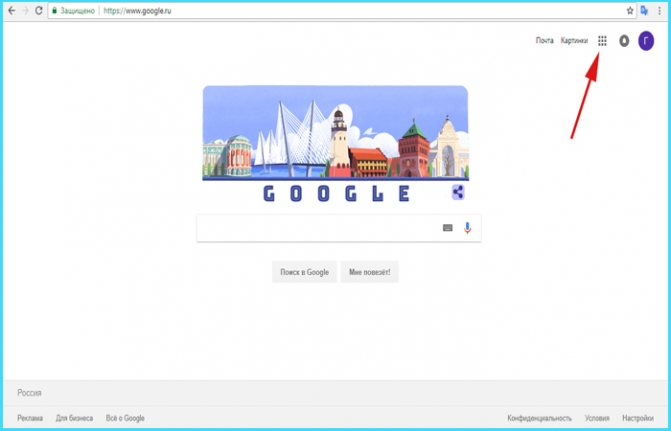Нажимаем на значок из девяти маленьких квадратов.
Действие 3. Видим всплывающее меню. В нем находим кнопку «Диск». Нажимаем и попадаем в сервис.
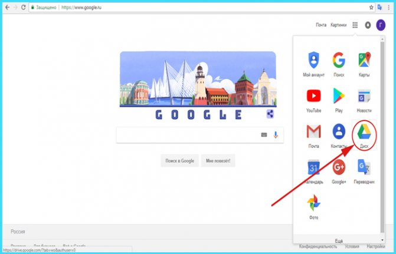Нажимаем на кнопку «Диск».
Действие 4. Когда мы впервые открываем «Диск», нам дают список инструкций по работе с утилитой. Рекомендуем их прочитать.
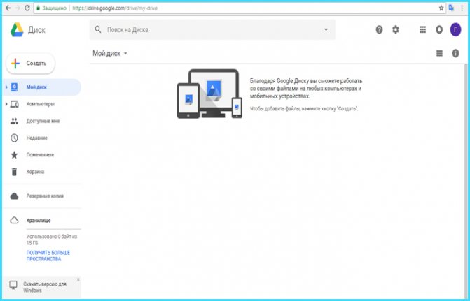Читаем инструкции по работе с утилитой.
Как пользоваться резервной копией Гугл Диска
На смартфоне нажмите на кнопку меню слева вверху и выберите «Резервные копии». Здесь содержаться бэкапы, сделанные вашим смартфоном, их можно отключить или удалить.
Управлять же копиями можно в настройках смартфона, в разделе «Резервное копирование и восстановление» — «Резервное копирование Google».
Установка программы google диск и работа с ней
После скачивания программы, нужно ее установить. Google Drive для рабочего стола позволяет быстро копировать файлы в облачное хранилище, причем по несколько за раз. Несмотря на то, что онлайн версия облачного хранилища от google удобна в использовании, программа для ПК значительно упрощает процесс работы с документами.
Начало работы с google диск:
Действие 1. Открываем файл программы. Расположен он в панели снизу. Либо заходим в загрузки (жмем клавиши Ctrl+J):
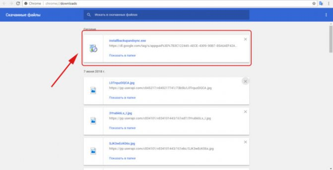Действие 2. Открывается программа установки. Все файлы автоматически скачиваются на компьютер:
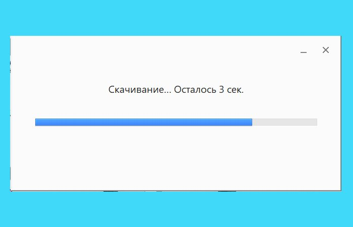Действие 3. В случае успешной процедуры, открывается стартовое окно. Теперь, чтобы ответить на вопрос как установить и настроить Google диск, остается пара шагов. Жмём кнопку «Начать»:
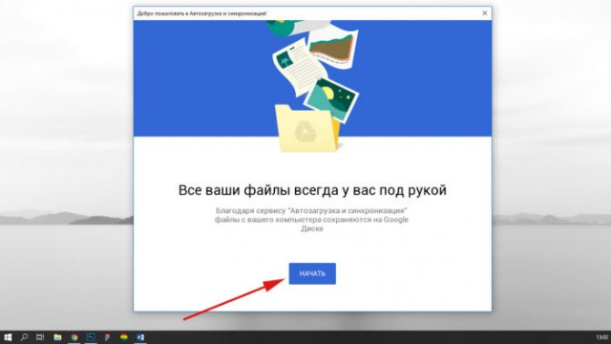Действие 4. Логинимся в аккаунте. Для этого вбиваем в поле номер телефона или адрес почтового ящика. Жмём «Далее»:
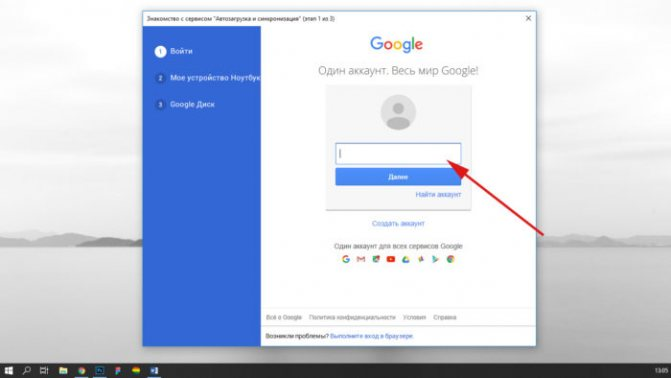Вводим пароль и нажимаем на кнопку «Войти»:
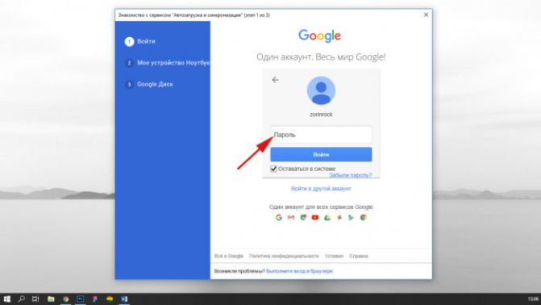Действие 5. Синхронизация:
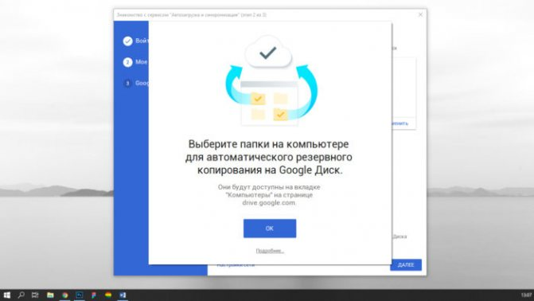Нажимаем на кнопку «ОК».
Google предложит отметить папки для резервного копирования данных. Выбираем нужные папки и жмём «Далее»:
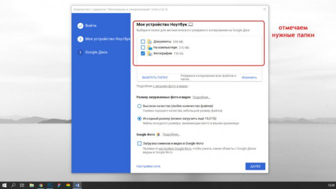Примечание! По умолчанию «Диск» предлагает зарезервировать стандартные папки пользователя: документы, изображения. Если вы хотите выбрать другую директорию, нажмите «Выбрать папку». Откроется окно проводника, в котором вы сможете найти нужны файлы.
Действие 6. В окне «Синхронизировать раздел «Мой диск» с папкой на этом компьютере» жмём «ОК»:
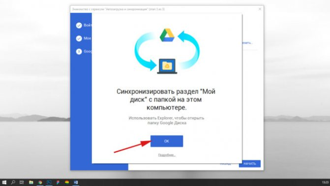В окне «Синхронизировать раздел «Мой диск» с папкой на этом компьютере» жмём «ОК» и жмём «Начать»:
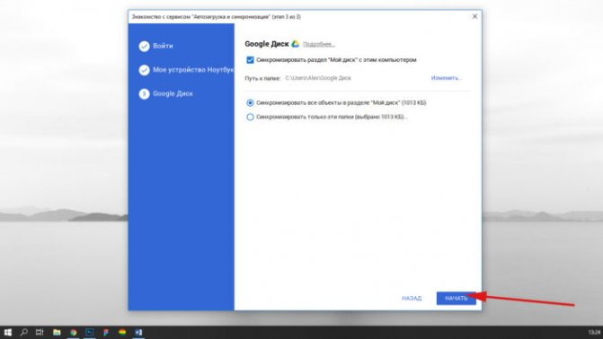После загрузки видим директорию «Google диск», где расположены все синхронизированные документы. Папка размещена в панели быстрого доступа проводника (слева).
Клиент Google Drive для корпоративной работы
Прежде чем разобраться с тем, как работать с Гугл Диском, нужно напомнить, что эта версия программы доступна только юридическим лицам по платной подписке, которая стоит от 5$ до 10$ и более в месяц для версии Enterprise. Поэтому, в этом курсе мы её рассматривать не будем.
Как работать с google диском
Выполнив инсталляцию, мы с легкостью можем загружать нужные документы cloud-сервис. Разбираем алгоритм по этапам.
1 Выбираем необходимый файл и перетаскиваем в директорию Гугл Драйв:
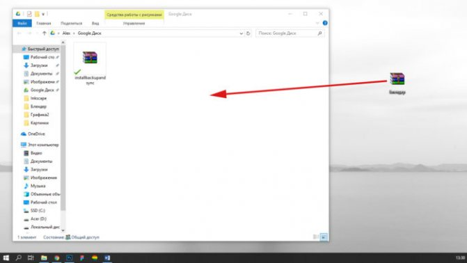Примечание! Папка Google диск всегда расположена в правом меню проводника.
2 Ждём, пока закончится закачка на сервер. Синие стрелки в левом углу документа означают, что файл еще загружается на сервер.
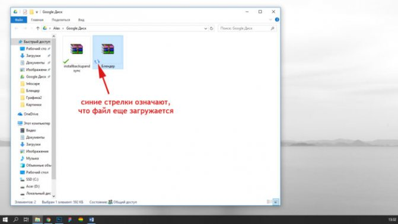Когда появится зеленая галочка – файл загружен.
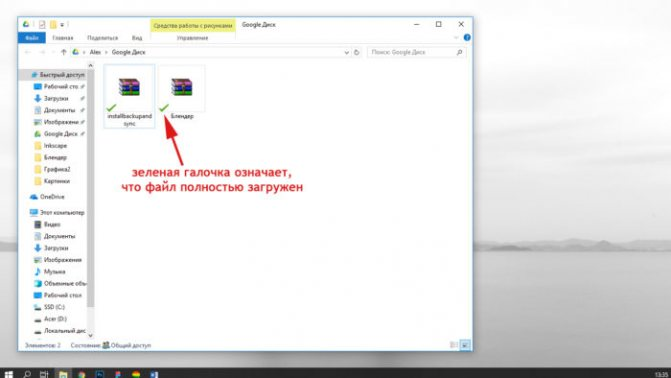Зелёная галочка означает загруженность файла.
Примечание! В случае, когда прошло более минуты и галочка не появилась, обновите папку (клавиша F5).
Проверяем файл. Для этого заходим в браузер. Открываем Google диск ( https://drive.google.com/ ).
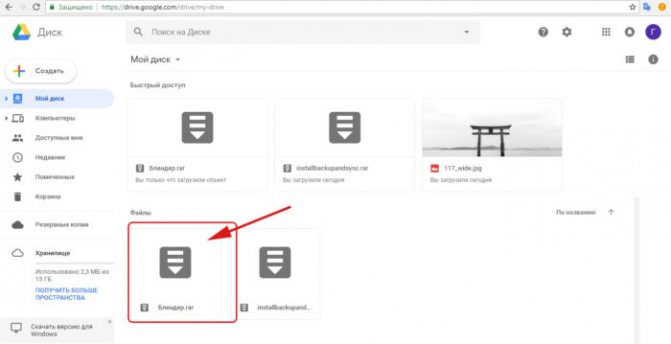Удостоверяемся, что документ успешно закачан в Drive.
Особенности синхронизации google диска
Важное преимущество cloud-сервисов заключается в автоматической синхронизации. Причем, данные синхронизируются без участия пользователя. Как только вы выбрали папку для синхронизации, любые изменения внутри нее будут отражаться в Google диске. Вне зависимости от девайса (компьютер, браузер, смартфон, планшет), вы всегда получаете круглосуточный доступ к файлам.
Например, если вы начали изменение документа в офисе и не успели завершить работу. Приехав домой, вы открываете тот же самый файл и продолжаете редактирование. «Диск» автоматически отслеживаем изменения в файлах и загружает их на любые ваши устройства.
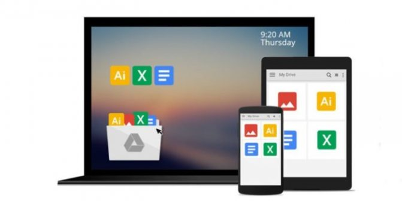Что нужно знать об использовании Диска Google
Как пользоваться облачным хранилищем, чтобы это приносило радость? Для начала нужно определиться на каком устройстве вы планируете создать диск. Есть вариант работы с диском через используемый браузер, а есть — скачать Google Drive на планшет или смартфон. Давайте рассмотрим оба варианта.
Создание диска на компьютере
Обратите внимание: чтобы создать облачное хранилище в Google, вы должны зарегистрироваться на сайте Гугл и иметь почтовый ящик в этой системе.
Как правило, он заканчивается на gmail.com.
Убедитесь, что у вас есть почта Google. Если у вас нет аккаунта, заведите его. Иначе вы не сможете создать персональное облачное хранилище. Регистрация почты — очень быстрый и легкий процесс.
Создание электронной почты на Гугл: инструкция для новичков
Владельцам почты на базе Google следует войти в аккаунт, рядом с аватаркой нажать на квадратик и вы увидите иконку «Диск».
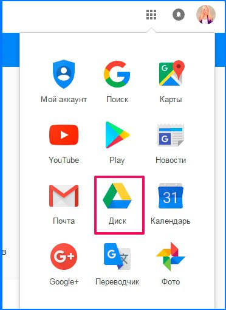Когда вы нажмете на иконку с названием «Диск», в новой вкладке или в новом окне откроется страница, где в левом нижнем углу будет написано, что диск можно скачать на компьютер.
Диск загружаете по ссылке, после чего на вашем компьютере будет открыта форма входа в Google Drive. Впишите туда логин и пароль от вашей электронной почты Gmail и нажмите кнопку Enter.
После этого у вас откроется окно, где вам нужно будет нажать иконку с надписью «Вперед», затем, хранилище откроется на вашем компьютере, и вы сможете перенести туда необходимые файлы. По завершению установки значок Диска Google появится на панели задач и на вашем рабочем столе. Чтобы открыть диск, вам нужно будет нажать на любой из этих значков.
Как видите, процесс создания диска на облачном хранилище очень прост и не занимает много времени. С этим справиться даже новичок в компьютерных вопросах не говоря уже о профессионалах. Преимущества использования облачного хранилища вместо съемных носителей информации вы почувствуете в первые часы использования.
Создание диска на телефоне
Хотите создать диск на телефоне? Пожалуйста, это возможно сделать как на базе iOS, так и на операционной системе Андроид.
Как я уже писала выше, вход в облачное хранилище можно осуществить через компьютер, телефон или планшет. Чтобы войти в хранилище через телефон или планшет, следует скачать приложение Google Диск. Скачать его можно либо с Play Market, либо с сайта самого Google.
Чтобы перед вами открылась вкладка Моя страница или Мой Диск, нажмите на иконку приложения. Перед вами появится форма входа, где вам нужно будет написать свои логин и пароль от почты Gmail. После входа откроется ваша страница с файлами.
Обратите внимание, что все файлы можно изменять в режиме реального времени. Синхронизация с другими устройствами происходит мгновенно. Использование диска на планшете или на смартфоне значительно облегчает работу.
Единственное условие для изменения документов в режиме реального времени и их синхронизации с остальными устройствами — работающий Интернет.
Если же у вас нет мобильного устройства на ОС Android, то вполне можно воспользоваться мобильной версией данного ресурса. Работа в программе что на телефоне, что на компьютере ничем не отличается.
В целом, использование диска на смартфоне или планшете безопасно и эффективно, и вы теперь сможете оставлять тяжелый ноутбук дома.
Основные функции Гугл Диска
После того как мы открыли Диск, сразу, что мы можем увидеть — это строку поиска.
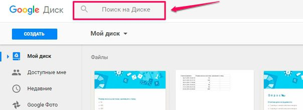Для того чтобы найти нужный вам документ, просто вбейте его название в строку поиска и сервис вам его быстренько найдёт.
Далее слева можно увидеть кнопку «Создать». Вот именно с её нажатия и начинается работа.
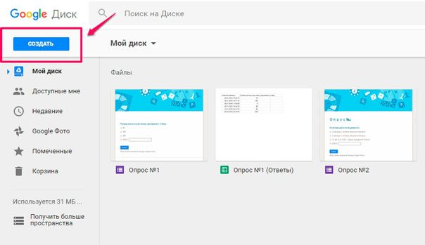Выбираете нужную вам функцию и приступаете к работе.
На скриншоте видно,что у нас есть возможность работать с разными файлами, документами, таблицами, презентациями.
Давайте я кратко расскажу про все вкладки основного меню сервиса:
- Доступные мне — здесь находятся те файлы, доступ к которым открыт вам другими пользователями;
- Недавние — показывает те документы, с которыми вы работали в последнюю очередь;
- Google Фото — содержатся все фото и картинки;
- Помеченные — файлы, которые вы отметили в процессе работы;
- Корзина — хранит в себе все удаленные данные.
Вообщем, все инструменты для эффективной работы нам доступны.
Обратите внимание, что справа, прямо под аватаркой, располагается иконка с настройками. Возможно вам они пригодятся, поэтому советую заглянуть в них.
От себя могу сказать, что интерфейс сервиса достаточно прост и, как модно сейчас говорить, «интуитивно понятен».